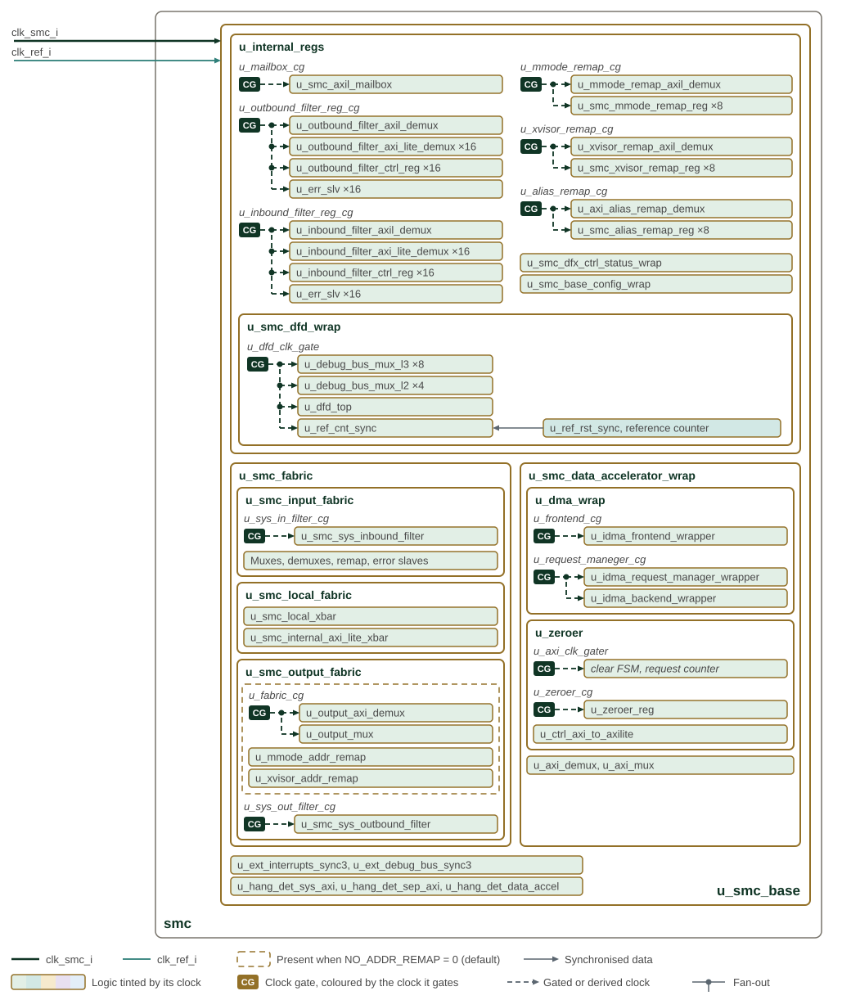
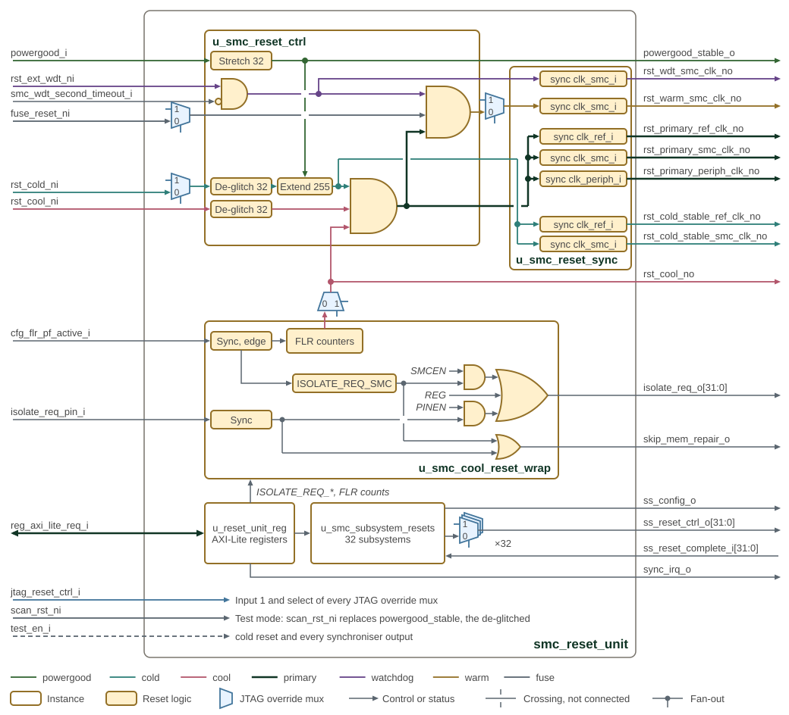
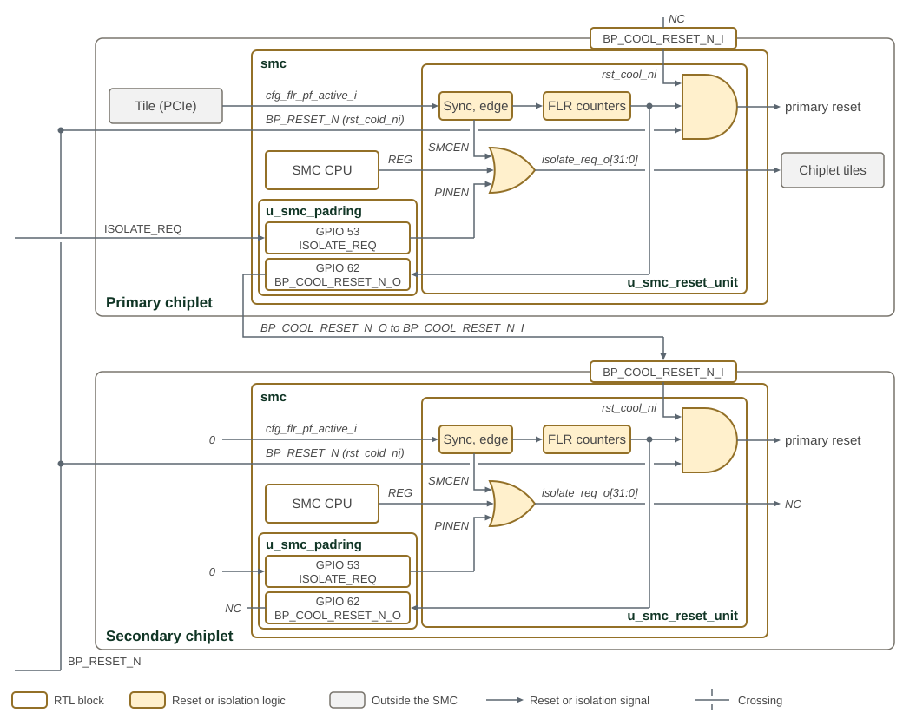
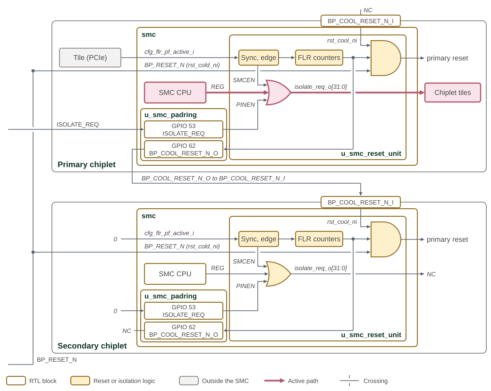
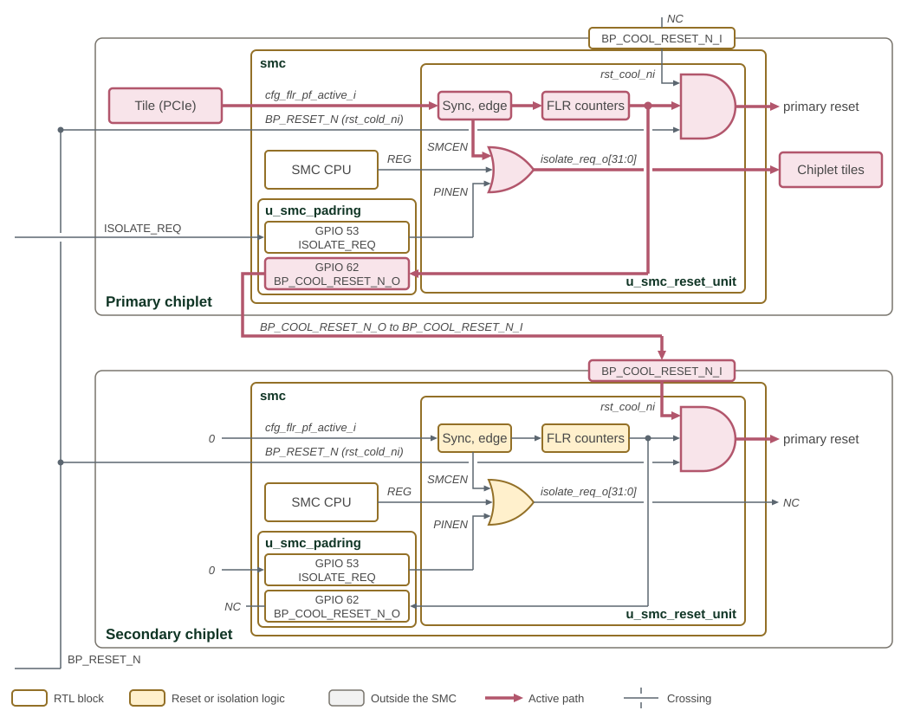
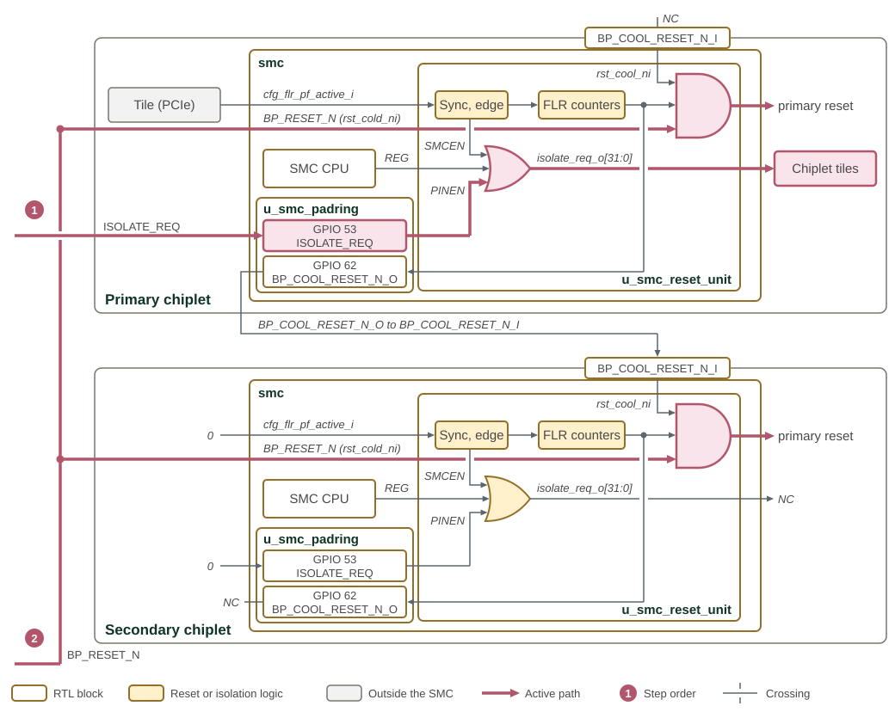

Clocks and Resets
SMC separates CPU/fabric operation, peripheral timing, reference-clock reset control and incoming telemetry into distinct clock domains. Reset sources are combined before release is synchronized into each destination domain. Subsystem isolation and reset-retention controls require support in the receiving subsystem.
1. Clock Architecture

Each clock input enters on the left in its own colour. clk_smc_i and
clk_ref_i run down trunks with one arrow into each of u_smc_base,
u_smc_cpu_wrapper and u_smc_peripherals; an arrow into an instance
means the clock reaches the logic inside it. Each logic block is tinted
with the colour of the clock that runs it, and a block split into bands
runs on several clocks. A clock gate is drawn as a CG tab coloured by the
clock it gates, with the gate’s instance name in italics beneath the logic
it clocks. Dashed lines are gated or derived clocks.
Most gates in u_smc_base are activity-based: each watches the AXI or
AXI-Lite port of the logic it clocks and stops the clock once the port has
been idle for the programmed hysteresis. u_fabric_cg and the output
demux and mux it clocks exist only when NO_ADDR_REMAP is 0, the default
in smc_config_pkg. u_debug_clock_gate runs the debug module clock
while the debugger holds dmactive. The I2C, UART, I3C, AVSBus and
telemetry gates are controlled by CLOCK_GATE_CONTROL in u_smc_base;
u_smc_peripherals_cdc synchronises each enable into the clock it gates.
The AVSBus clock starts at u_avs_clk_ref_gater and
u_avs_clk_periph_gater. Inside u_avsbus_controller, u_refclk_clkgate
and u_apbclk_clkgate feed the glitch-free mux u_refclk_apbclk_mux,
selected by avs_clock_select[1]; u_test_clkmux2_0 substitutes
clk_periph_i in test mode; the divider u_clk_div, used while
avs_clock_select[0] is set, divides by a programmable value, 4 after
reset; and u_avs_bus_clkgate stops the result on idle. The output,
avs_clock, leaves through u_smc_padring on GPIO 49. spi_clk_i
reaches only the SPI pad datapath in u_smc_padring.
| Clock | Logic and boundary |
|---|---|
|
CPU cluster, local fabric, remapping/filtering, register crossbar, OCTS, and telemetry decoding/message storage. Individual blocks may gate this clock. |
|
Power-good/reset conditioning, FLR countdowns, DFD local time tick and peripheral reference-clock inputs. |
|
AVSBus, I2C, UART/log-engine and I3C operation. Register accesses cross through per-port AXI-Lite CDC bridges after the SMC-domain crossbar. |
|
Incoming ATB side of each telemetry crossing FIFO. The
receiver core and its CSRs operate in the SMC domain; the external telemetry
reset is |
1.1. Timer and Debug Timebases
-
OCTS uses
clk_smc_i. -
CLINT receives one tick per 1000 CPU-cluster
cbuscycles; the uncore input uses the main SMC clock. This timer tick is not the reference-clock input. -
The CPU debug module uses a gated CPU-wrapper clock, enabled by debug activation with a test override. JTAG TCK clocks the scan interface separately.
1.2. Peripheral Timing Requirements
The integrator supplies clk_periph_i at a frequency satisfying every enabled
peripheral. A minimum frequency of 100 MHz applies; the upper limit is not fixed
and is set by the integrator according to timing closure, peripheral IP limits,
and system power and performance goals.
The I3C target’s worst-case internal SCL-to-SDA turnaround is four core-clock cycles. Meeting the 12 ns target turnaround limit therefore requires a clock period no greater than 3 ns (approximately 333.3 MHz or faster) before allowing for pad and routing delays. The integrator must include those delays in the timing budget and select a higher frequency where needed. See the CHIPS Alliance I3C PHY timing requirements. This is a target-mode requirement; controller-mode timing configuration does not establish target compliance.
2. Reset Architecture

Reset inputs enter on the left and the unit’s outputs leave on the right.
Each reset net has its own colour, listed in the legend. The blue mux
symbols are JTAG override muxes: jtag_reset_ctrl_i drives their input 1
and select, drawn as short stubs, and each mux passes the value on input 1
while its override bit is set.
In u_smc_reset_ctrl, powergood_i is stretched by 32 reference clock
cycles into powergood_stable, which leaves as powergood_stable_o,
clears the de-glitchers while low and holds the cold-reset extender. The
cold reset, after its JTAG override, must stay low for 32 reference clock
cycles to pass the de-glitcher, and its release is extended by 255 cycles.
The cool-reset pin passes its own 32-cycle de-glitcher. The primary reset is
the AND of the stable cold reset, the de-glitched cool-reset pin and the FLR
cool reset. The watchdog reset is the AND of rst_ext_wdt_ni, which comes
from the SEP watchdog, and the inverted SMC watchdog second timeout;
smc_wdt_first_timeout_i does not reach the reset logic. The warm reset is
the AND of the watchdog reset, the primary reset and the fuse reset, which
the eFuse wrapper releases once fuse sensing completes and any boot stall
ends. Debug-initiated resets are the JTAG overrides of the cold, cool,
warm, fuse and per-subsystem resets.
u_smc_reset_sync gives each output an asynchronous assertion and a
deassertion synchronised to its clock. u_smc_cool_reset_wrap runs the FLR
sequence and isolation logic described in Function Level Reset and Isolation.
Its gates act on each of the 32 bits; the inputs labelled SMCEN, REG and
PINEN are the ISOLATE_REQ_SMCEN_REG, ISOLATE_REQ_REG and
ISOLATE_REQ_PINEN_REG bits. skip_mem_repair_o is high while the
synchronised isolation pin or ISOLATE_REQ_SMC is set.
u_reset_unit_reg is reset by rst_primary_smc_clk_no, as are the
SS_CONFIG and SS_COLD_RESET_N registers in u_smc_subsystem_resets;
the isolation registers and FLR counters are reset only by the stable cold
reset, so they survive a cool reset. The per-subsystem cold and warm resets
leave ss_reset_ctrl_o unsynchronised, and each subsystem synchronises them.
In test mode, scan_rst_ni replaces the stretched powergood, the
de-glitched cold reset and every synchroniser output.
2.1. Power-Good and Cold Reset
BP_POWERGOOD is the POR root. A 32-stage reference-clock synchronizer produces
powergood_stable. Cold reset from BP_RESETN is filtered through a 32-bit
shift register: once released, assertion requires 32 consecutive low samples.
A 255-cycle reference-clock extension holds cold reset after the filtered input
releases. Incoming cool reset has the same low-sample filter but no cold-reset
extension. These are clock-cycle conditions, not fixed nanosecond delays.
Power-good also enters JTAG/DTP as pwr_on_rst_ni. The primary TAP combines it
with pad TRST, so loss of power-good resets TAP/TDR state even if TRST is released.
Functional cold reset alone does not reset that state.
| Source | Functional effect |
|---|---|
Power-good low |
Holds functional reset and resets the JTAG/TDR POR path. |
|
Filtered and extended cold reset feeds primary reset. |
Incoming cool reset |
Filtered pin request feeds primary reset. |
FLR cool reset |
Reference-domain timed reset feeds primary reset; isolation is controlled separately as described below. |
External watchdog reset / second SMC watchdog timeout |
Assert the watchdog
reset term, which also asserts warm reset. The first-timeout input does not
enter the reset equation in |
Fuse reset |
Holds warm reset until released by the fuse-control path. |
JTAG reset overrides |
Select alternate fuse, cold, cool or warm reset values; normal functional equations below assume these overrides and scan mode are inactive. |
2.2. Primary and Warm Reset
In normal operation the active-low reset equations are:
rst_primary_n = stable_cold_rst_n AND stable_cool_rst_n
AND rst_cool_from_flr_n
rst_wdt_n = rst_ext_wdt_ni AND NOT smc_wdt_second_timeout_i
rst_warm_n = rst_primary_n AND rst_wdt_n AND fuse_reset_niPrimary reset covers the main SMC functional fabric, peripheral control and configuration paths. Warm reset drives CPU core/uncore reset control, including the cluster’s interrupt and timer logic, without resetting every primary-domain peripheral. CPU control registers also provide per-core/uncore reset controls; debug reset requests and JTAG overrides should not be treated as one unconditional warm-reset input. See the CPU chapter for its isolation/reset interlock.
2.3. Reset Synchronization
smc_reset_sync uses four-stage prim_sync_reset instances for asynchronous
assertion and destination-clock-synchronous release. Scan mode selects the scan
reset. A stopped destination clock cannot complete functional reset release.
Output from smc_reset_sync |
Clock | Reset source |
|---|---|---|
|
SMC |
Stable cold reset; exported by the unit as
|
|
SMC |
Primary reset. |
|
SMC |
Warm reset after JTAG override selection. |
|
SMC |
Watchdog reset term. |
|
Reference |
Stable cold reset; exported as
|
|
Reference |
Primary reset. |
|
Peripheral |
Primary reset. |
JTAG overrides for outgoing per-subsystem cold/warm controls leave the unit unsynchronized. The receiving subsystem must synchronize release at its boundary. The separate telemetry input reset belongs to its integration domain.
3. Function Level Reset and Isolation
PCIe cfg_flr_pf_active_i crosses independently into the SMC and reference
clock domains. Its synchronized rising edge sets the SMC isolation latch and
starts the reference-domain reset sequence when enabled by a nonzero hold count.
The reset state machine has no isolation-complete input: its delay must be
chosen to accommodate the system’s isolation requirements.
3.1. Isolation Controls
Each of the 32 isolate_req_o bits is the OR of three requests:
ISOLATE_REQ_REG[i]
OR (ISOLATE_REQ_PINEN_REG[i] AND synchronized isolate_req_pin_i)
OR (ISOLATE_REQ_SMCEN_REG[i] AND ISOLATE_REQ_SMC_REG)The FLR edge sets ISOLATE_REQ_SMC_REG. After recovery, a write to that register
with any write strobe asserted clears the latch; write data is ignored. An FLR
edge in the same cycle takes priority. Ending the timed cool reset does not clear
the latch or release isolation automatically. Clearing one source does not cancel
an isolation request held by either of the others.
The isolation registers and FLR count storage are cold-reset state, so they
survive cool reset. ISOLATE_REQ_PINEN_REG has a conditional synchronous clear:
it clears on cold reset only while the synchronized isolation pin is low.
Do not assume an uninitialized pin-enable mask becomes known while that pin is high.
3.2. Timing and Recovery
-
Program the isolation masks and both FLR timing registers before enabling requests. The count values cross from SMC to the reference domain through handshaked synchronizers; readback in the SMC domain does not acknowledge arrival in the reference domain.
-
ISOLATE_REQ_FLR_COUNTER_VALUEselects the pre-reset countdown; zero allows assertion without that countdown.ISOLATE_REQ_FLR_RESET_COUNTER_VALUEselects the cool-reset hold count and must be nonzero to start the timed flow. -
On a synchronized FLR edge, the sequencer counts in reference-clock cycles, asserts cool reset, then releases it after the hold countdown. Destination reset synchronizers add their release latency. The sequencer is not a queue of overlapping FLR requests; coordinate requests and recovery in the integration.
-
Re-establish the affected subsystem’s state and satisfy its isolation-release requirements before clearing the FLR isolation latch or software requests.
A zero hold count disables the timed reset sequence, but does not prevent the
SMC-domain FLR edge from setting the isolation latch. ISOLATE_REQ_VIS reports
synchronized pin and cool-reset levels; it is not an isolation-completion handshake.
skip_mem_repair_o is the OR of the synchronized isolation pin and the FLR
isolation latch. It does not depend on the per-subsystem masks, and a software-only
ISOLATE_REQ_REG request does not assert it. The receiving logic determines how
this request bypasses memory repair/MBIST; it is not a general SRAM-retention guarantee.
3.3. Isolation Connections
SMC FLR isolation connections between chiplets shows cool-reset and isolation connections between primary and secondary chiplets. The next three figures repeat the same drawing and highlight the path that each kind of request activates, so they can be compared directly.

Each chiplet’s SMC takes its cold reset from the board BP_RESET_N and
its cool reset from its BP_COOL_RESET_N_I input; the primary reset
is the AND of these and the FLR cool reset. The FLR cool reset also
drives the open-drain BP_COOL_RESET_N_O pad, GPIO 62, which pulls the
line low while the reset is asserted and leaves it undriven otherwise. The
primary chiplet’s BP_COOL_RESET_N_O connects to the secondary chiplet’s
BP_COOL_RESET_N_I, so an FLR on the primary chiplet cool-resets the
secondary. To the secondary chiplet, a cold reset on BP_RESET_N and a
cool reset on BP_COOL_RESET_N_I are the same: both assert its primary
reset. Only its FLR and isolation registers are reset by the cold reset
alone, and the secondary chiplet does not use them. The primary chiplet’s
BP_COOL_RESET_N_I and the secondary chiplet’s BP_COOL_RESET_N_O are not connected. The board drives
ISOLATE_REQ, sampled on GPIO 53, into the primary chiplet only; the
secondary chiplet ties its ISOLATE_REQ and cfg_flr_pf_active_i low and
leaves its isolate_req_o unconnected. The labels REG, PINEN and SMCEN
on the isolation OR’s inputs name the registers that qualify each source.
The drawing leaves out the de-glitchers and synchronisers shown in
SMC reset unit architecture.
SMC-driven FLR isolation shows isolation propagation for an SMC software request.
Software sets bits of ISOLATE_REQ_REG, which reach isolate_req_o directly.
Software cannot start the FLR counters, so this request isolates tiles without
a cool reset.

Tile-request-driven FLR isolation shows isolation propagation for a tile request.
A tile such as the PCIe controller raises cfg_flr_pf_active_i. Its
synchronised rising edge sets ISOLATE_REQ_SMC, which isolates the
subsystems enabled in ISOLATE_REQ_SMCEN_REG, and starts the FLR
counters. When they expire, the FLR cool reset asserts the primary reset of
the primary chiplet and, through BP_COOL_RESET_N_O, of the secondary
chiplet.

GPIO-driven FLR isolation shows isolation propagation for a GPIO request, in two
numbered steps. First the board raises ISOLATE_REQ, which isolates the
subsystems enabled in ISOLATE_REQ_PINEN_REG; then it asserts BP_RESET_N,
which cold-resets both chiplets. ISOLATE_REQ_PINEN_REG is not reset by the
cold reset while the pin is high, so the isolation holds across it.

4. Subsystem Controls and Clock Gating
The reset unit exports cold/warm reset, force-to-reference-clock and configuration,
SRAM, debug and critical-signal hold controls for 32 subsystems. These are requests
to the receiving subsystem, whose implementation defines the retained state.
SS_CONFIG_LOCK and SS_COLD_RESET_LOCK mask writes to the corresponding
configuration and cold-reset bits. SS_RESET_COMPLETE samples the return vector
through a three-stage synchronizer; the unit does not sequence releases from it.
SMC blocks have their own clock-gating enables, activity detection and hysteresis controls. For example, DMA uses a six-bit hysteresis input and bus-aware wakeup. A gate suppresses clock transitions; it does not itself create a power island or establish that outstanding bus traffic is drained. Follow the owning block’s quiescence requirements before reset, isolation or clock changes.
5. Memory Map and Register Reference
5.1. Memory Map
The following reset-unit map defines subsystem controls, isolation masks, visibility and FLR timing registers. Offsets are relative to the reset-unit base in the subsystem memory map. External state in the cool-reset wrapper follows the cold-reset behavior described above rather than the primary reset of the register-interface logic.
5.2. Detailed Register Map
Reset Unit Address Map
Subsystem reset control, hold and isolation controls, and reset-sequencing status registers.
Register List:
| Address | Name | Access | Description |
|---|---|---|---|
| 0x20 | SS_CONFIG | RW | - |
| 0x24 | SS_CONFIG_LOCK | RW | - |
| 0x40 | SS_COLD_RESET_N | RW | - |
| 0x44 | SS_WARM_RESET_N | RW | - |
| 0x48 | SS_CONFIG_HOLD | RW | - |
| 0x4C | SS_SRAM_HOLD | RW | - |
| 0x50 | SS_CRITICAL_HOLD | RW | - |
| 0x54 | SS_DEBUG_HOLD | RW | - |
| 0x60 | SS_RESET_COMPLETE | R | - |
| 0x70 | SS_COLD_RESET_LOCK | RW | - |
| 0x80 | SS_FORCE_TO_REF_CLK | RW | - |
| 0xA8 | SYNC_REG | RW | - |
| 0xB0 | ISOLATE_REQ_REG | RW | - |
| 0xB4 | ISOLATE_REQ_PINEN_REG | RW | - |
| 0xB8 | ISOLATE_REQ_SMC_REG | RW | - |
| 0xBC | ISOLATE_REQ_SMCEN_REG | RW | - |
| 0xC0 | ISOLATE_REQ_VIS | R | - |
| 0xC4 | ISOLATE_REQ_FLR_COUNTER_VALUE | RW | - |
| 0xC8 | ISOLATE_REQ_FLR_RESET_COUNTER_VALUE | RW | - |
Register Details:
SS_CONFIG
| Bits | Field | Access | Reset | Description |
|---|---|---|---|---|
| 31:0 | ss_config | RW | 0x0 | Configuration registers to setup system configuration. Usage is integration-specific; see the adopter chiplet specification. |
SS_CONFIG_LOCK
| Bits | Field | Access | Reset | Description |
|---|---|---|---|---|
| 31:0 | config_lock | RW1S | 0x0 | Written to lock down SS config. If bit 0 is written, then bit 0 of other SS config cannot be written to again |
SS_COLD_RESET_N
| Bits | Field | Access | Reset | Description |
|---|---|---|---|---|
| 31:0 | reset_n_n0_scan | RW | 0x0 | Subsystem active low cold resets |
SS_WARM_RESET_N
| Bits | Field | Access | Reset | Description |
|---|---|---|---|---|
| 31:0 | reset_n_n0_scan | RW | 0xFFFFFFFF | Subsystem active low warm resets |
SS_CONFIG_HOLD
| Bits | Field | Access | Reset | Description |
|---|---|---|---|---|
| 31:0 | configuration_state_hold | RW | 0x0 | Used with warm_reset_n. Asserting ensures all registers configured during boot, including fuse values for export compliance, SRAM repair, other fuse values, etc. are preserved |
SS_SRAM_HOLD
| Bits | Field | Access | Reset | Description |
|---|---|---|---|---|
| 31:0 | sram_hold | RW | 0x0 | Used with warm_reset_n. Asserting ensures SRAMs, latch arrays and anything else that MBIST is used to test and initialize during cold reset are preserved |
SS_CRITICAL_HOLD
| Bits | Field | Access | Reset | Description |
|---|---|---|---|---|
| 31:0 | critical_signal_hold | RW | 0x0 | Used with warm_reset_n. Asserting ensures security, RAS, NMIs, perf counters, debug/trace and other subsystem specific registers are preserved |
SS_DEBUG_HOLD
| Bits | Field | Access | Reset | Description |
|---|---|---|---|---|
| 31:0 | debug_hold | RW | 0x0 | Used with warm_reset_n. Debug hold signal to ensure any debug registers are preserved |
SS_RESET_COMPLETE
| Bits | Field | Access | Reset | Description |
|---|---|---|---|---|
| 31:0 | reset_complete | R | 0x0 | Response signal from subsystem to indicate reset (or some other critical step) has completed. Bitwise write 1 to clear |
SS_COLD_RESET_LOCK
| Bits | Field | Access | Reset | Description |
|---|---|---|---|---|
| 31:0 | cold_reset_lock | RW1S | 0x0 | Written to lock down SS cold reset. If bit 0 is written, then bit 0 of other SS cold reset cannot be written to again |
SS_FORCE_TO_REF_CLK
| Bits | Field | Access | Reset | Description |
|---|---|---|---|---|
| 31:0 | force_ss_to_ref_clk_n | RW | 0x0 | Forces clock to be ref clk. The ensures reset reaches all FFs within a subsystem in same clock cycle |
SYNC_REG
| Bits | Field | Access | Reset | Description |
|---|---|---|---|---|
| 31:1 | Reserved | - | - | Reserved |
| 0 | sync | RW | 0x0 | Set to assert global sync bit |
ISOLATE_REQ_REG
| Bits | Field | Access | Reset | Description |
|---|---|---|---|---|
| 31:0 | isolate_req_reg | RW | 0x0 | Isolate request. This prevents reset from being propagated to SS, keeping them alive in case of a cold reset |
ISOLATE_REQ_PINEN_REG
| Bits | Field | Access | Reset | Description |
|---|---|---|---|---|
| 31:0 | isolate_req_pinen_reg | RW | 0x0 | Isolate request pin enable. This enables the external isolate request pin to have an effect on ss isolate requests |
ISOLATE_REQ_SMC_REG
| Bits | Field | Access | Reset | Description |
|---|---|---|---|---|
| 31:1 | Reserved | - | - | Reserved |
| 0 | isolate_req_smc_reg | RW | 0x0 | Isolate request smc. Asserted once cfg_flr_pf_active is asserted, de-asserted by sw |
ISOLATE_REQ_SMCEN_REG
| Bits | Field | Access | Reset | Description |
|---|---|---|---|---|
| 31:0 | isolate_req_smcen_reg | RW | 0x0 | Isolate request smc enable. This enables the FLR lock to have an effect on ss isolate requests |
ISOLATE_REQ_VIS
| Bits | Field | Access | Reset | Description |
|---|---|---|---|---|
| 31:9 | Reserved | - | - | Reserved |
| 8 | cool_reset_n_o | R | 0x1 | Visibility bit for cool reset output |
| 7:5 | Reserved | - | - | Reserved |
| 4 | cool_reset_n_i | R | 0x1 | Visibility bit for cool reset input |
| 3:1 | Reserved | - | - | Reserved |
| 0 | isolate_req_pin | R | 0x1 | Visibility bit for isolate request pin |
ISOLATE_REQ_FLR_COUNTER_VALUE
| Bits | Field | Access | Reset | Description |
|---|---|---|---|---|
| 31:0 | isolate_req_flr_counter_value | RW | 0x0 | Number of cycles post cfg_flr_pf_active assertion is waited until cool_reset_n is asserted |
ISOLATE_REQ_FLR_RESET_COUNTER_VALUE
| Bits | Field | Access | Reset | Description |
|---|---|---|---|---|
| 31:0 | isolate_req_flr_reset_counter_value | RW | 0x0 | Number of cycles cool_reset_n is asserted for. NOTE: The cool reset flow requires this value to be greater than 0; a value of 0 will prevent initiation, regardless of ISOLATE_REQ_FLR_COUNTER_VALUE's value |